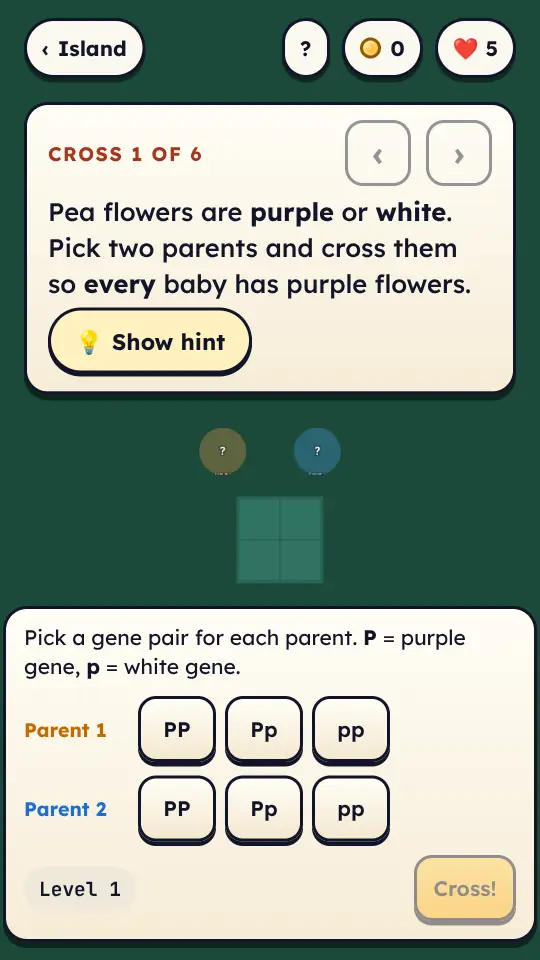

All labs › Biology › Pea Crosses
Biology lab · Bittu's Pond
Pea Crosses
मटर के मेल · पौधों का मेल, फूलों का अनुमान
Choose two parent pea plants, cross them and predict the flower colours of the babies, then check the result.
- Biology
- Tinkerer · ages 7–10
- 6 levels
- English · हिंदी
- Free, no sign-up

How it works
Purple × white
- Pick PP for Parent 1 and pp for Parent 2, then press Cross.
- Every baby gets one P and one p: all four are Pp.
- P is dominant, so all four babies have purple flowers.
Stuck? Every level has a hint, and a "Show me" walk-through.
Why it works
The big idea
Each parent gives the baby one of its two colour cards. Purple (big P) is a loud card that always shows; white (small p) only shows when the baby has two white cards.
What children learn
Skills in this lab
- Babies get features from both parents
- Dominant and hidden (recessive) features
- Predicting results before testing
For parents and teachers
This lab is in the Tinkerer band (ages 7–10). Each player picks a band, and sees only the labs made for it.
Curio Island is free in the browser with no sign-up. Progress is saved on this device only. Ads are child-safe and non-personalised, and never appear inside a lab.
Part of Bittu's Pond on the island. 6 levels to finish.